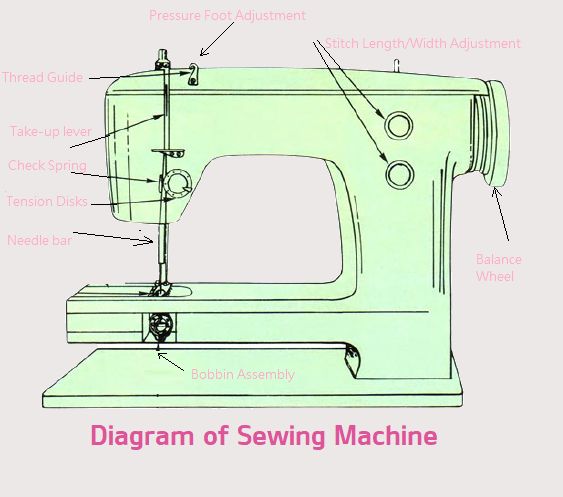

Home
Earlier this year, I decided I wanted to learn how to make clothes with a sewing machine as a hobby. I went on craigslist on the "free stuff" section and luckily found someone giving away their sewing machine about two towns over, and I went and set it up in my room. Connecting my newfound hobby with this web design class, this site will have:
- Outfits ideas from existing clothes I like
- Patterns that are similar to clothes in those outfits
- Possibly a section where I can upload pictures of clothes I've made
Things I've made so far:
- Shorts
- This was the first thing I made, and essentially the reason I started learning how to use a sewing machine.
I wanted to make a pair of shorts for the summer, and followed the tutorial here. - Mask
- The mask was considerably easier than the shorts, mainly due to there being less fabric. I followed the tutorial here.
It took two attempts to really get it looking something like a mask should, the first was too small and narrow.

Listen to some relaxing music here!
Things I want to try to make next:
- Tshirt for the summer weather
- Wallet
- Sweatshirt/hoodie
Diagram of a standard sewing machine:
Contact me by email.